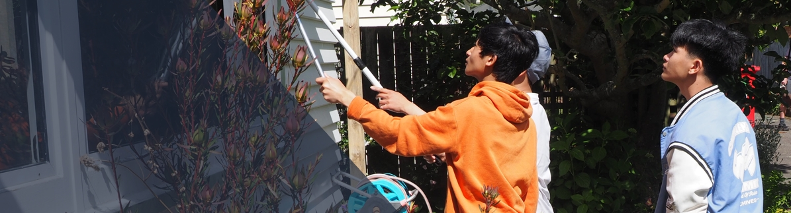

COMMUNITY
SERVICE
TAWA COLLEGE
EOTC HUB

Community Service
Students will complete one day of community service assisting local residents and businesses.
This will usually occur within walking distance of Tawa College for all Year 10 students.
This day has the key focus of citizenship and has been a great success in previous years.
MEETING TIME
+ LOCATION
Students will need to meet outside the school gym at 9:15am , where they will get a briefing and seperate into groups from there.
Students will spend a day completing community service in a small group with friends in the Tawa basin,
supervised by a staff member.
This is a highly valuable experience where students have the chance to interact with the elderly helping them with gardening,
painting etc or assisting local food banks, kindergartens, hospice shops and charities for the day.
Students will usually walk to their allocated job with a staff member, however a very small number of jobs will be on
the fringes of the Tawa Basin and therefore they may be driven by a staff member in their groups.

WHAT TO BRING
A day pack containing:
• your lunch and water bottle
• sun hat and/or a warm jumper and rain jacket if the weather forecast is bad.
It will still go ahead unless there is torrential rain.
Please wear appropriate old clothes for potential gardening/painting jobs and closed toed shoes. Bring any medication required.